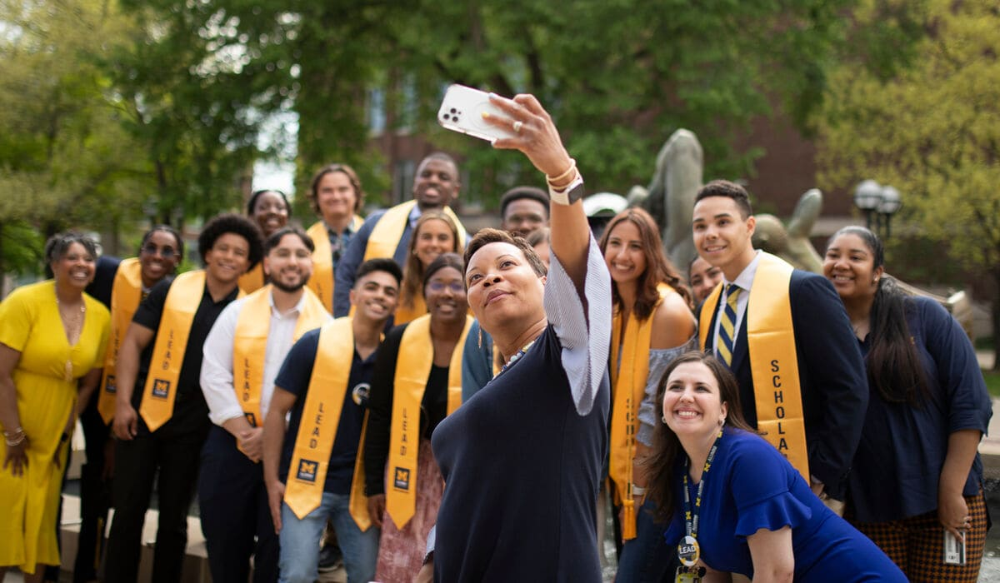

Network Outreach
Networking is a vital part of career development because it helps you access opportunities that
aren’t always publicly advertised, gain insider knowledge about industries, and build relationships that
can lead to mentorship, referrals, or collaborations. It allows you to learn from others’ experiences, stay
informed about trends, and improve your communication and interpersonal skills. Whether through informational
interviews, professional events, or platforms like LinkedIn, networking helps you build a reputation, stay top of mind,
and open doors that might not be available through applications alone. Simply put, who you know,and who knows you,
can make a big difference in your career journey.
How to Network Effectively:
Reach out to alumni or professionals for short informational interviews:
Attend industry events, career fairs, and conferences
Join LinkedIn groups or professional associations in your field
Follow up and stay in touch with contacts after meeting them
- Keep it short! Try to keep it to 100 words or less
- No mention of jobs/internships in subject or body
- Connection goes first (e.g. UMSI connection)
- Generalize your interest – make it easy for them to respond
- Maintain control of the follow up. This gives you permission to follow up once
Offer help or share resources — networking is a two-way street
Informstional interviews are informal conversation with someone working in an area
that interests you who will give you information and advice.
*Note: It is not a job interview, and the objective is not to find job openings...but it is a very powerful networking tool!
You can stay up to date on events Here
Don't have a LinkedIn in? Go to this Website or sign up at https://www.linkedin.com/
Writing emails is a great way to stay in touch in a professional manner. See below how to write an email to your network:
Steve Dalton’s The 2-Hour Job Search promotes the use of a 5-point email as an effective message for networking.
Email Example
Below is an example of how this template may be utilized to reach out.
------------------------------------------------------------------------
Reaching out to Industry Professional
Subject: UMSI BSI Student Seeking Your Advice
Dear Mr. Johnson,
My name is Alexis, and I will be a senior in the UMSI BSI program at U-M this fall. I’m interested in learning more about careers in UX research, and
I saw on LinkedIn that you currently work in UX Research at Google. As an alum, I know your perspective about your current role and the steps you took to get
there would be very helpful.
I would be happy to meet via phone or Zoom. I know this may be a busy time, so if we aren’t able to meet within the next two weeks,
I'll be sure to check back in to see if sometime later this summer would work better.
Thank you so much,
Alexis
Making Connections
Where To Find Alumni
CDO Resources
- UMSI LinkedIn Group | UMSI Alumni Tool
- CareerLink (employer contacts)
- UCAN
- Alumni Career Connections (see CareerLink for event details)
- Networking or recruiting events (see CareerLink for event details)
Your network: UMSI & beyond
- Friends and peers (your own personal network)
- Faculty, supervisors, mentors (your own professional network)
- LinkedIn search